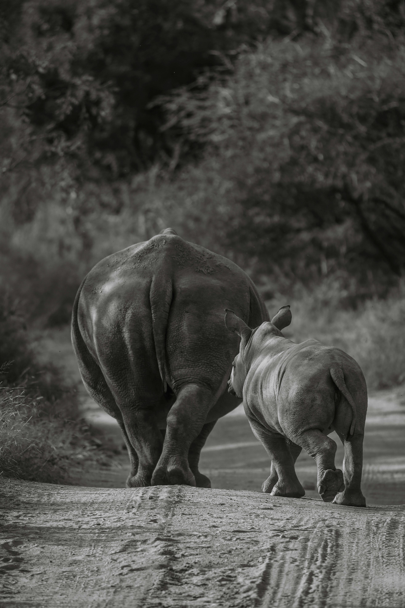

About white rhino current situation

A mother and daughter White Rhino by Pexels.
- Najin (mother) and Fatu(daughter), the last two remaining northern white rhinos, are protected at Kenya, East Africa. Najin is 34 years old and Fatu is 24. They are expected to live to about 40. The rhinos are cared for around the clock and protected by armed workers.